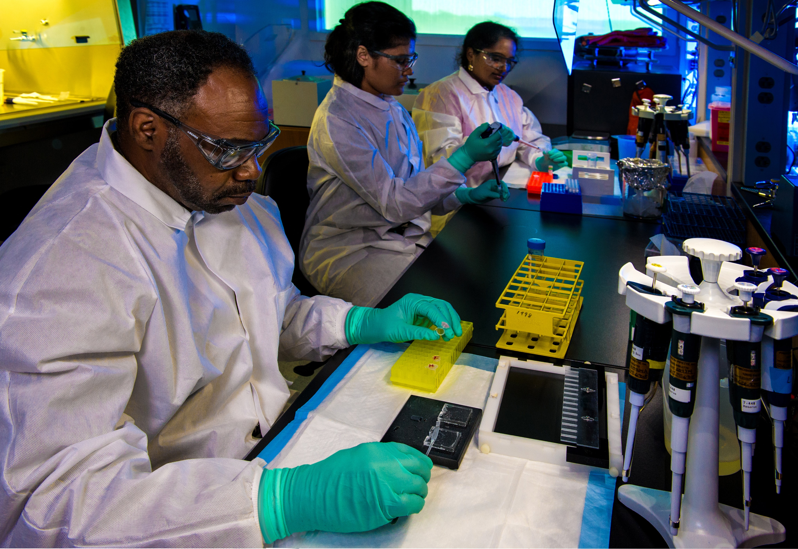

Serviços
-

- Promover a redução da carga biológica dos resíduos, de acordo com os padrões exigidos. Ou seja, eliminação do bacillus stearothermophilus no caso de esterilização, e do bacillus subtyllis, no caso de desinfecção;
- Descaracterizar os resíduos, no mínimo impedindo o seu reconhecimento como lixo hospitalar;
- Atender aos padrões estabelecidos pelo órgão de controle ambiental do estado para emissões dos efluentes líquidos e gasosos;
- Processar volumes significativos em relação aos custos de capital e de operação do sistema. Com isso, passa a ser economicamente viável em termos da economia local.